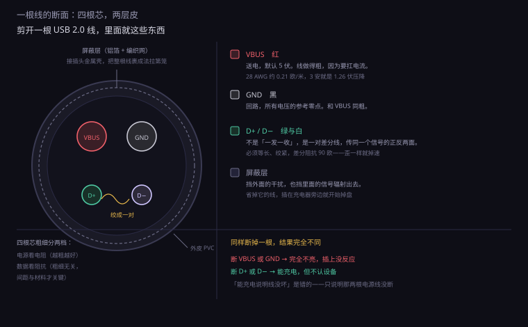
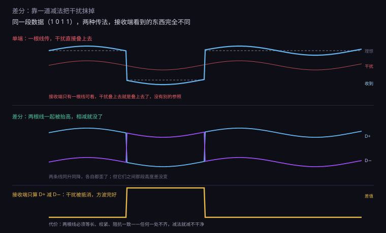
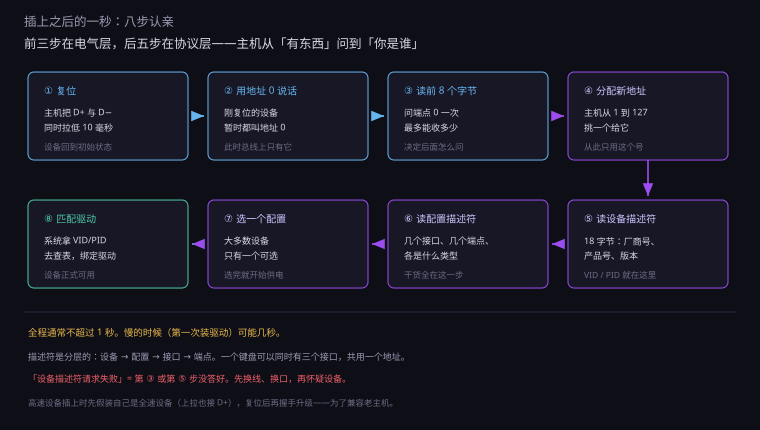
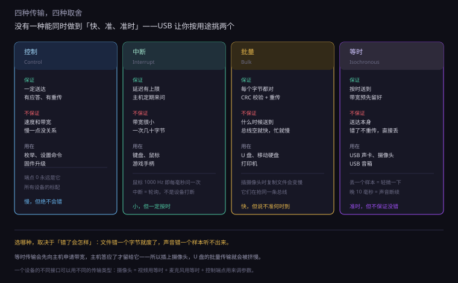
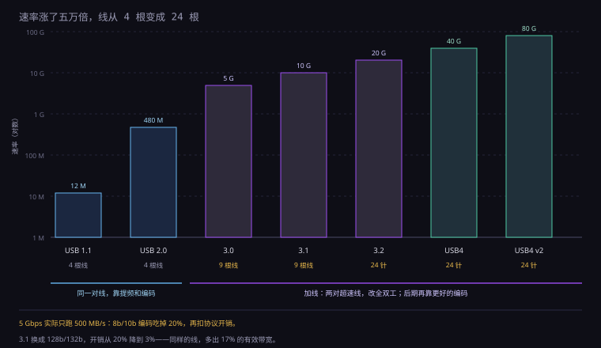
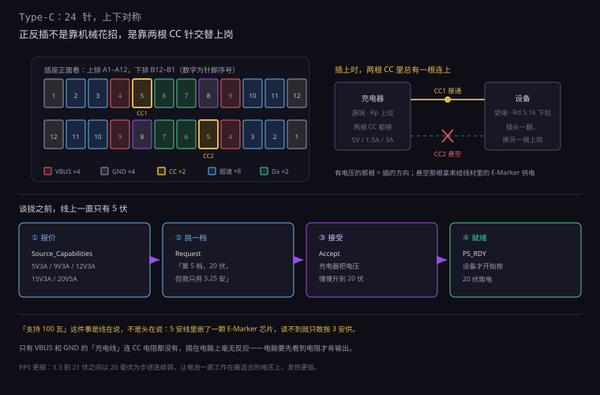

约 1.1 万字 · 6 张图 · 读完你能说清那四根线各干什么、为什么插上电脑三秒内就认出来了、 以及为什么同一根线有的能传 4K 有的只能充电
拿一根老式 USB 线（就是那种一头方一头扁的），从中间剪断，看断面。 里面不是四根并排的铜丝，而是一个有层次的结构。
最里面是 四根细线：红、黑、绿、白。 红黑两根粗一些，是电源；绿白两根细一些，并且拧成一对，是数据。 这四根外面包一层铝箔（或金属编织网），叫屏蔽层， 再外面是 PVC 外皮。
屏蔽层不是装饰。它接在插头的金属壳上，把整根线裹成一个「法拉第笼」， 挡外面的电磁干扰进来，也挡里面的信号辐射出去。 劣质线常常省掉这一层，或者只做一层稀疏的编织——于是插在旁边充电器上就开始掉盘。
这四根线的分工，是整个 USB 的第一条规矩：
| 线色 | 名字 | 干什么 | 粗细 |
|---|---|---|---|
| 红 | VBUS | 送电，默认 5 伏 | 较粗（28–20 AWG） |
| 黑 | GND | 回路，所有电压的参考零点 | 与 VBUS 同粗 |
| 绿 | D+ | 数据正端 | 细（28 AWG 左右） |
| 白 | D− | 数据负端 | 与 D+ 同粗，且必须绞在一起 |
为什么电源线要粗、数据线要细？因为两者在乎的东西不一样。 电源线在乎电阻——电流大，电阻大一点就发热、就掉压； 数据线在乎阻抗——它要传的是高频信号， 粗细不是关键，关键是两根线之间的距离和绝缘材料，那决定了「特性阻抗」。
这里就出现了第一个容易被忽略的事实：USB 数据线是有「标准阻抗」的，90 欧姆。 这不是随便定的数，是让信号在线上跑的时候不反射的条件。 线做歪了、压扁了、折得太狠，阻抗就变了，信号在末端反射回来， 和后面的信号撞在一起——这就是「线用久了会不认盘」的物理原因之一。
1994 年，七家公司坐在一起商量一件事：机箱后面那一排形状各异的接口， 能不能合并成一个。那时候一台 PC 背后有串口（9 针）、并口（25 针）、 PS/2（两个圆口）、游戏口（15 针）、以及各种厂商自定的口。 每一个都只干一件事，每一个都要占一块地方、一套驱动、一份说明书。
他们想要的是一个「万能口」：能接键盘鼠标、能接打印机、能接硬盘、 能接音频设备；插上就能用，不用关机、不用设跳线、不用装驱动。 这三条要求——通用、热插拔、自动识别——就是 USB 的全部初衷。
1996 年 USB 1.0 发布，速率 1.5 兆（低速）和 12 兆（全速）。 真正让它普及的是 1998 年的 iMac：那台机器把软驱、串口、并口全砍了， 只留两个 USB 口。整个行业骂了半年，然后所有厂商跟着做。
回头看，USB 赢的地方不在技术。它的速率当时不如火线， 延迟也不如 PS/2（中断式，没有轮询）。它赢在免费—— 规范开放，芯片便宜，谁都做得起。

线芯没变，接头变了六代：A 型方口、B 型方口、Mini、Micro、Type-C、以及苹果的 Lightning。 每一代的改动，都在解决「插拔寿命」这一个问题。
| 接头 | 年代 | 标称插拔 | 弱点 |
|---|---|---|---|
| USB-A / B | 1996 | 1500 次 | 体积大，只能用在主机和打印机上 |
| Mini-USB | 2000 | 5000 次 | 弹片在插头上，插头一歪就变形 |
| Micro-USB | 2007 | 10000 次 | 弹片在插座里，用久了失去弹性，越插越松 |
| Type-C | 2014 | 10000 次 | 针脚细，进沙子容易短路 |
为什么 Micro-USB 用两年就松？因为它的弹性触点做在母座里。 手机上的母座是一排小弹片，插头插进去把它压下去。 压一次两次没事，压一万次之后，金属疲劳，弹片回不来了—— 于是插头在里面晃，接触电阻变大，充电变慢、数据断连。
Type-C 反过来：弹片做在插头里，母座是一圈固定的金属壳。 插头是消耗品，坏了换根线；手机上的母座基本不会被磨坏。 这个思路的极致是苹果的 Lightning——插头是完全实心的，一点弹性件都没有。
先看送电那两根。VBUS 和 GND 之间的关系，就是电池的正负极： 主机给 5 伏，设备从中取电。这件事简单到没什么可讲—— 除了一个细节：这 5 伏并不总是 5 伏。
设备端实际拿到的电压 = 5 伏 减去 线上的压降。 压降 = 电流 × 线电阻。拿真实数字算一次：
一根 1 米长的普通 USB 线，电源芯是 28 AWG，单根电阻约 0.21 欧姆。 电流要走一个来回，所以算 0.42 欧姆。
设备取 500 毫安（USB 2.0 的标准上限）：压降 = 0.5 × 0.42 = 0.21 伏， 设备端拿到 4.79 伏。没问题。
设备想取 3 安（快充）：压降 = 3 × 0.42 = 1.26 伏， 设备端只剩 3.74 伏。这个电压已经低于很多芯片的工作下限， 设备会判定「供电不足」，拒绝充电，或者反复重启。
这就是快充线要粗的全部理由。 换 20 AWG（单根 0.033 欧姆），1 米来回 0.066 欧姆， 3 安下压降只有 0.2 伏——问题解决。 同样一根线，粗细差三倍，能过的电流差三倍以上（因为损耗按平方算）。
很多人以为 D+ 负责发、D− 负责收。不是。 它俩是一对，永远一起工作，传的是同一个信号的两个相反版本。
发送端把逻辑 1 变成「D+ 高、D− 低」，把逻辑 0 变成「D+ 低、D− 高」。 接收端不看任何一根线的绝对电压，只看两者的差。 差值大于 +200 毫伏判为 1，小于 −200 毫伏判为 0。
这个做法叫差分信号。它带来的好处，下一小节专门讲—— 先说结论：它能让信号在充满干扰的环境里活下来，并且把速率提上去。
还要注意一件事：USB 2.0 的这两根线是半双工的—— 同一时刻只能一个方向说话。主机发的时候设备听，设备发的时候主机听， 靠协议轮流。这就是为什么老 USB 传文件时，读和写不能同时进行。 到 USB 3.0 才改成两对线、全双工。
差分传输的核心，是一道减法。
假设环境里有个干扰源——比如旁边一根正在通过 3 安电流的电源线， 或者一个开关电源的变压器。它会在 D+ 和 D− 上同时感应出一个电压， 比如都抬高 0.5 伏。
接收端算的是 D+ 减 D−： 原来是 (+1.0) − (−1.0) = 2.0 伏，被干扰后变成 (+1.5) − (−0.5) = 2.0 伏。 干扰被减掉了。
这个「同时作用在两根线上」的干扰，叫共模噪声。 差分接收端天生对它免疫——只要两根线受到的干扰足够一致。
于是问题变成了：怎么保证两根线受到的干扰一致？ 答案是把它们拧在一起。绞合让两根线在空间上不停交换位置， 干扰源离谁近、离谁远，平均下来就一样了。 绞得越密，一致性越好。 网线里那八根线绞得那么讲究，就是这个道理。

差分不是免费的。它要求两根线长度一致、走向一致、阻抗一致。 一根长一根短，信号到达时间不同，减出来的波形就变形了—— 这叫偏斜（skew）。USB 2.0 对这个的要求是几十皮秒级， 所以线材厂要用专门的设备控制绞距和长度。
还有那个 90 欧姆。它叫差分特性阻抗， 由两根线的直径、间距、绝缘材料的介电常数共同决定。 信号在线上跑，如果末端阻抗不匹配，能量就会反射回来。 反射的信号和后面的信号叠加，眼图就闭合了——接收端分不清 0 和 1。
这也解释了一类很烦的故障：线能充电，但不能传数据。 充电只用 VBUS 和 GND，对阻抗毫无要求； 数据要过 D+/D−，阻抗一塌糊涂就传不了。 「能充电说明线没断」是错的——它只说明那两根电源线没断。
工程上判断一根线好不好，不看它通不通，看一张图：眼图。
做法是把接收到的信号按比特周期切成很多段，一段段叠在一起画。 如果每个比特都长得一样，叠出来中间会空出一块菱形——像一只眼睛。 眼睛张得越大，信号越干净；眼睛闭得越小，越容易误判。
眼睛被什么吃掉？三条：
USB 2.0 高速对这个有明确的模板：眼图中心那个六边形区域里不许有任何波形穿过。 线材厂用眼图测试仪一根根筛，过不了的就是废品。 这也解释了为什么「同一卷线，剪成 1 米能用、剪成 3 米就不认」—— 线越长，衰减越大，眼睛越小，到某个长度就闭上了。
现在把插头插进去。接下来的几百毫秒里，发生了一串很精巧的事， 而这一切的起点，只是一个 1.5 千欧的电阻。
主机那一边，D+ 和 D− 各自通过一个 15 千欧的电阻接到地（下拉）。 没有设备时，两根线都是低电平。
设备那一边，D+ 上接着一个 1.5 千欧的电阻，接到 3.3 伏（上拉）。 插上的瞬间，D+ 被拉高：
分压 = 3.3 × 15 ÷ (15 + 1.5) = 3.0 伏。 主机的检测电路看到 D+ 从 0 变成 3 伏，就知道「有东西插进来了」。
这里的巧思在于：上拉接在 D+ 还是 D− 上，可以区分设备的速度。 全速设备（12 Mbps）把上拉拉在 D+ 上；低速设备（1.5 Mbps）拉在 D− 上。 主机看哪根线变高，就知道对方是哪种。一个电阻的位置，编码了一个二进制位。
高速设备（480 Mbps）更狡猾：它插上时先假装自己是全速设备 （上拉也在 D+ 上），等主机复位它之后，双方再通过一串电流脉冲「握手」， 确认彼此都支持高速，才切换到高速模式。
为什么要这么绕？因为兼容。USB 2.0 的主机要能插 USB 1.1 的设备， 反过来 1.1 的主机插 2.0 的设备也不能烧。 假装全速、再协商升级，是唯一能让两边都不出错的办法。

主机知道「有东西插进来了」，但还不知道它是什么。 接下来这一步叫枚举（enumeration）——说白了就是一次身份调查。
流程是这样的：
这套描述符是分层的：设备 → 配置 → 接口 → 端点。 一层套一层，像一份带附录的档案。
| 层级 | 说明什么 | 举例 |
|---|---|---|
| 设备 | 整体身份：谁造的、什么型号、几个配置 | 厂商 0x046D、产品 0xC52B |
| 配置 | 一种工作状态，含几个接口、总功耗多少 | 「普通模式」耗 100 mA |
| 接口 | 一类功能，对应一个驱动 | 键盘接口、多媒体按键接口 |
| 端点 | 一条单向的数据通道，有地址、类型、包大小 | 端点 1 IN，中断，8 字节 |
这套设计的好处在复合设备上体现得最清楚。 一个带背光的键盘，其实是一个设备里塞了三个接口： 一个键盘接口、一个多媒体按键接口、一个控制灯光的接口。 系统会给它装三个驱动，但它们共用一根线、一个地址。 打印机加扫描仪的一体机、带麦克风的摄像头，都是这么做的。
设备描述符里最实用的两个字段，是 idVendor（厂商号）和 idProduct（产品号），合起来叫 VID/PID。
VID 由 USB 协会分配，一个厂商一个，要花钱买（几千美元）。 PID 由厂商自己定，想怎么编怎么编。 所以「VID 相同、PID 不同」通常意味着同一家公司的不同产品。
这两个数在系统里是能看到的。Windows 的设备管理器里， 右键设备 → 属性 → 详细信息 → 硬件 ID，会看到这样一串：
USB\VID_046D&PID_C52B&REV_1201
046D 是罗技，C52B 是某个接收器型号。这串东西的用处很直接： 当驱动装不上时，拿它去搜，就能找到到底是什么芯片。 很多「未知设备」其实就是缺一个 VID/PID 对应的驱动。
厂商号还有一个副作用：它让「山寨」变得容易识别。 一个标着某大牌、VID 却是别家的设备，基本可以确定是仿的—— 因为 VID 是要花钱注册的，山寨厂不会去买。
枚举时读到的「端点类型」，决定了这个设备以后怎么用总线。 USB 定义了四种传输类型，每一种都是一组取舍。
| 类型 | 保证什么 | 不保证什么 | 典型设备 |
|---|---|---|---|
| 控制 | 一定送达，有应答和重传 | 速度、带宽 | 枚举、设置命令、固件升级 |
| 中断 | 延迟有上限（主机定期来问） | 带宽很小，一次最多几十字节 | 键盘、鼠标、游戏手柄 |
| 批量 | 一定送达，有 CRC 和重传 | 什么时候送到（可用带宽多就快） | U 盘、移动硬盘、打印机 |
| 等时 | 按固定节奏送达，时间准 | 送达本身（错了不重传，直接丢） | 声卡、摄像头、USB 音箱 |
这四行值得逐条想一遍，因为它们解释了四种完全不同的「卡」。
控制传输是最基础的一种。端点 0 永远是控制端点， 所有设备都必须有。它保证送达，因为枚举过程不能出错—— 一旦描述符读错了，设备就认不出来。
中断传输的名字有误导性。它不是「设备主动打断主机」，而是「主机定期来问设备」。 鼠标设成 1000 Hz 回报率，意思是主机每毫秒来问一次「有没有动」， 设备答「动了 3 格」。所以「1000 Hz 鼠标更跟手」是真的， 但它占用的总线资源也是 125 Hz 鼠标的八倍。
批量传输是 U 盘的命脉。它保证每一个字节都对（有 CRC 校验，错了重传）， 但不保证什么时候送到。总线上空闲多，它就快；同时在传摄像头数据，它就慢。 这就是为什么「复制文件时插着移动硬盘会变慢」——它们在同一条总线上抢带宽。
等时传输最特殊：它预留带宽。 一个 USB 声卡在枚举时就说「我每毫秒要 192 个字节」，主机答应了， 从此这 192 字节的位置就归它，谁也不能占。 代价是它不重传：万一这一包传错了，就直接丢，播放里出现一个咔哒声。
这个取舍很深刻：实时音频宁可丢一个样本，也不要晚到 10 毫秒。 晚到的声音听起来是断断续续的，丢一个样本只是轻微一下。 而 U 盘正好相反——晚一点没关系，错一个字节文件就废了。

USB 麦克风和 USB 声卡共用一条线：数据线在里面，电源线也在里面。 而这条电源线是从主板来的 5 伏，上面叠着 CPU、显卡、开关电源的各种纹波。
麦克风的信号有多小？一个正常说话的声音，经过麦克风转换后是毫伏级。 电源上的纹波也是毫伏级。两者同一个数量级，就混在一起了。 放大电路分不清哪个是声音、哪个是电源噪声，于是底噪就出来了。
解决办法有三个层次：
这也解释了一个怪现象：同一支麦克风，插台式机有底噪、插笔记本反而干净。 笔记本用电池供电时，电源这条路上没有开关电源的纹波—— 拔掉充电器再录一次，底噪经常就消失了。
还有一个常见的误解：总觉得「换了 USB 3.0 口，U 盘就该快三倍」。 实际上大部分时候没什么变化，因为瓶颈不在接口。
USB 2.0 的 480 Mbps，理论上是 60 MB/s。但那个年代的 U 盘， 实际读写只有 20 到 35 MB/s。差的那一半去哪了？ 在闪存颗粒和主控上——颗粒本身的写入速度就那么多， 接口再快也只能等着。
这也是为什么「USB 3.0 的 U 盘」分两种：一种是真 3.0（读写 100 MB/s 以上）， 一种是「3.0 接口 + 2.0 颗粒」（读写还是 30 MB/s，只是插在 3.0 口上不报错）。 看接口颜色没用，看实测速度才有用。
同样的道理适用于网线、HDMI 线、内存卡： 一条链路的实际速度，永远等于最慢那一环。 买线的时候看规格，用的时候看瓶颈。
上面四种传输，有一个共同前提：所有对话都由主机发起。 USB 是一条主从总线，设备没有任何办法主动开口。
主机每 1 毫秒发一个帧起始包（SOF，Start of Frame）， 包里带一个帧号。设备收到 SOF，就知道「新的一帧开始了」。 在这一帧里，主机会按一张调度表，依次去问各个端点：
先发一个令牌包（「端点 3，我要读你」）， 设备回一个数据包，主机再回一个握手包（收到 / 没空 / 出错）。 一次这样的往返叫一个事务。
注意这个名字的荒谬之处：「中断传输」里的「中断」，不是设备打断主机， 而是主机按时来问设备。 鼠标不可能主动说「我动了」，它只能等着，等主机来问， 然后一次性把「动了多少」交出去。
因为简单，而且便宜。
主从结构不需要仲裁——不会出现两个设备同时说话把总线撞坏的情况。 设备端的芯片可以做得极简单：没有总线控制器，没有冲突检测， 只等着收令牌、答数据。这让一个 USB 接口的成本降到几毛钱。
代价也很明确，而且就写在日常体验里：
这套设计的对手是 IEEE 1394（火线）。火线是对等的—— 任何设备都能主动发起传输，不需要主机。技术上更优雅， 但芯片贵、专利费高，最后输给了更笨但更便宜的 USB。 这是计算机史上反复出现的一课：赢的常常不是更好的技术，是更便宜的那一个。
既然所有对话都由主机发起，那「一个口变四个口」的 Hub 在干什么？ 答案是：它什么都不决策，只负责转发。
Hub 内部是一个重复器加一个分叉器。 主机发下来的包，它原样广播给所有下行口； 哪个口上的设备回应，它就把回应转回给主机。 整个过程中它不理解包的内容，也不知道谁是目标—— 全靠设备自己看地址，不是我的我就不吭声。
这件事听起来很笨，但它带来一个隐藏的好处： Hub 让总线在物理上变成了一棵树，逻辑上还是一根线。 所有设备仍然共享那一条带宽，仍然只能被主机轮询。 所以「插满四个口的 Hub」不会变成四倍带宽，只会四家分一份。
USB 2.0 的 Hub 还有一个更精巧的设计：事务翻译器（TT）。 一个 1.1 的低速设备插在 2.0 的 Hub 上，如果它的慢速事务直接跑在高速总线上， 会浪费大量时间（高速的一个微帧 125 微秒，够低速设备跑好几个事务）。 TT 的做法是：把低速设备的事务在 Hub 内部"攒起来"，再打包成高速事务发给主机。 这样一个慢设备就不会拖累整条总线。
这也是「为什么有的 Hub 贵、有的便宜」的一个原因： 便宜 Hub 用一个 TT 管所有口（多个慢设备会互相拖）， 贵的每个口一个 TT（互不影响）。
USB 的速率涨了五万多倍，但接口的样子几乎没变。 这中间的秘密，藏在线芯的数量和编码的方式里。
| 版本 | 速率 | 线芯 | 关键变化 |
|---|---|---|---|
| USB 1.0 / 1.1 | 1.5 / 12 Mbps | 4 | 低速与全速，半双工 |
| USB 2.0 | 480 Mbps | 4 | 高速模式，还是那四根线 |
| USB 3.0 / 3.1 Gen1 | 5 Gbps | 9 | 加两对超速线，改全双工 |
| USB 3.1 Gen2 | 10 Gbps | 9 | 换更高效的编码 |
| USB 3.2 Gen2x2 | 20 Gbps | 24（Type-C） | 两条通道并行 |
| USB4 | 40 / 80 Gbps | 24（Type-C） | 隧道化 PCIe 与 DisplayPort |
看清楚一件事：从 1.1 到 2.0，速率涨了 40 倍，线一根没加。 怎么做到的？靠提高信号频率和更好的编码，把同一对线的潜力榨干。 但到 480 Mbps 时，这对线基本到顶了——再快，衰减和干扰就压不住了。
所以 3.0 换了办法：加线。 加了两对差分线（一对专门发、一对专门收），从半双工变成全双工。 线芯从 4 根变成 9 根，接头也从 4 针变成 9 针。 这就是为什么 USB 3.0 的 A 口是蓝色的、里面多了一排针。

标称 5 Gbps，实际拷贝只有 400 到 500 MB/s。差额不是厂商虚标， 是编码开销。
数字信号在线上跑，需要保证「0 和 1 的数量大致平衡」， 否则直流分量会让接收端的工作点漂移。 最简单的办法是每 8 位数据编成 10 位，多出来的两位保证平衡。 这叫 8b/10b 编码，开销 20%。
5 Gbps × 0.8 = 4 Gbps = 500 MB/s。再扣掉协议包头、CRC、握手包， 实际能到 400 多 MB/s，对得上。
3.1 Gen2 换了更聪明的编码（128b/132b），开销只有 3%。 10 Gbps × 0.97 ≈ 9.7 Gbps ≈ 1.2 GB/s。 同样的线，换个编码方式，多出 17% 的有效带宽。
到 USB4 这一代，「USB」这个词已经不太准确了。 它传的不再只是 USB 数据，而是把三种东西打包在一起传： USB 数据、PCIe 数据、DisplayPort 视频。
这个做法叫隧道化（tunneling）。打个比方： 原来的接口像三条独立的管道，各走各的； USB4 把它们拆成小包，混在一条大管道里送， 到对面再拆开分给三个接收方。 好处是一条线通吃，坏处是任何一股堵了都会影响调度。
这套技术不是 USB 组织发明的，是英特尔发明的，叫雷电（Thunderbolt）。 2011 年第一代雷电用 Mini-DP 接口，10 Gbps； 2015 年雷电 3 改用 Type-C，40 Gbps，同时供 100 瓦电。 2019 年英特尔把协议捐给了 USB 组织，改名叫 USB4。
| 名字 | 速率 | 特点 |
|---|---|---|
| 雷电 3 | 40 Gbps | PCIe 3.0 ×4 隧道，可外接显卡 |
| 雷电 4 | 40 Gbps | 数据最低保证 32 Gbps，支持 4 口 Hub |
| USB4 | 20 / 40 Gbps | 基于雷电 3，兼容性要求放宽 |
| USB4 v2 | 80 Gbps | 需要新的有源线材 |
为什么雷电比普通 USB 贵那么多？两个原因：
一是信号完整性。40 Gbps 的信号在铜线上跑， 衰减极快。被动线最多 0.8 米，再长就要用「有源线」—— 线两头各嵌一颗芯片，把信号重新整形再发出去。 一根两米的全速雷电线，价格能顶一个普通硬盘盒。
二是认证。雷电要求主机、设备、线材三方都通过认证， 任何一环不合格就降级到 USB 模式。这套认证保证了体验，也抬高了成本。
USB 最初只想给键盘鼠标供电，所以定了 5 伏、500 毫安，也就是 2.5 瓦。 这个数字在 1996 年很合理——那时候一个鼠标的功耗不到 0.1 瓦。
然后手机来了。2.5 瓦充一块 3000 毫安时的电池，要十几个小时。 于是 USB 的供电能力被一次次往上推：
| 阶段 | 电压 | 电流 | 功率 | 怎么谈的 |
|---|---|---|---|---|
| USB 2.0 | 5 V | 0.5 A | 2.5 W | 不用谈，插上就有 |
| USB 3.0 | 5 V | 0.9 A | 4.5 W | 不用谈 |
| BC 1.2 | 5 V | 1.5 A | 7.5 W | D+/D− 短接一下表示「我是充电口」 |
| PD 2.0 | 5–20 V | 最高 5 A | 100 W | CC 线上双向协商 |
| PD 3.1 | 5–48 V | 最高 5 A | 240 W | 扩了电压档，28/36/48 V |
注意一个关键转折：从 7.5 瓦到 100 瓦，靠的不是加大电流，是抬高电压。
为什么？还是那条线。回到第 2 小节那个算式： 线电阻 0.42 欧姆，要送 100 瓦。
如果坚持 5 伏：电流要 20 安，线损 = 20² × 0.42 = 168 瓦。 送 100 瓦，路上烧 168 瓦——线会化，效率是负的。
改成 20 伏：电流只要 5 安，线损 = 25 × 0.42 = 10.5 瓦。 同样一根线，损耗降到十六分之一。
改成 48 伏（240 瓦）：电流还是 5 安，线损还是 10.5 瓦。 功率翻了一倍多，线上的损耗一点没变。
这就是为什么现在的充电头都标「20V 5A」「48V 5A」—— 它是把高压送到设备门口，再在设备里降压。 高压在长线上跑，低压在设备内部跑，各取所需。
同样的 65 瓦，2010 年的笔记本电源是块砖，现在能塞进鸡蛋大的壳子里。 这不是「工艺进步」四个字能概括的，背后是一次材料替换。
充电头里的核心是开关变压器。它的体积和开关频率成反比： 频率翻倍，同样的功率只需要一半的磁芯。所以想让头变小，就得让开关更快。
但硅做的 MOS 管快到一定程度就不行了——每次开关都要经历一个 「电压还没降下去、电流已经上来」的瞬间，这个瞬间的损耗随频率线性增长。 频率提到 500 千赫，硅管就热得受不了。
氮化镓（GaN）换掉了硅。它的开关速度快十倍， 寄生电容小，同样的频率下损耗低得多。 于是频率可以做到 500 千赫到 1 兆赫，变压器缩到原来的几分之一。 「65 瓦鸡蛋头」就是这么来的。
代价也有：氮化镓器件贵、驱动电路更讲究、高频带来的电磁干扰更难压。 所以便宜的大功率头还在用硅，只是把体积做大一点、加个风扇。 你花的钱，一半买的是「不用风扇」。
Type-C 那个「正反都能插」的小设计，是这个接口最讨人喜欢的地方。 实现它的办法说出来有点土：把针脚做成完全对称，并且准备两套。
它的接头里有 24 个针脚，上下两排各 12 个，中心对称。 关键的几组是：
| 针脚 | 干什么 | 为什么重要 |
|---|---|---|
| VBUS / GND | 送电与回路 | 四根 VBUS、四根 GND，并联着分担电流 |
| D+ / D− | USB 2.0 兼容 | 只有一组，所以 USB 2.0 设备不需要全功能线 |
| TX1± / TX2±、RX1± / RX2± | 超速收发各两对 | 正反插时自动选一组 |
| CC1 / CC2 | 检测插入方向、协商供电 | 整个 Type-C 的大脑 |
| SBU1 / SBU2 | 边带信号 | DisplayPort 的辅助通道走这里 |
正反插的秘密全在 CC1 和 CC2 上。
充电器（源端）在两个 CC 针上都接一个上拉电阻 Rp。 设备（受端）在两个 CC 针上都接一个 5.1 千欧的下拉电阻 Rd。
插头插进去时，无论正着还是反着，总有一个 CC 针连上、另一个悬空。 源端测两个针的电压：哪个有电压，就知道插的是哪一面； 同时，另一个悬空的针可以用来给线材里的芯片供电（叫 VCONN）。
这一步还顺便完成了两件事：
再往上，就要靠 PD 协议在 CC 线上传消息了： 一串编码过的脉冲，一问一答，谈定电压和电流。 谈好之前，双方都只敢用 5 伏。

「协商」这个词听起来很抽象，实际过程就是一次很直白的报价还价：
在 PS_RDY 之前，双方都守着 5 伏。这是安全设计： 万一谈崩了，线上永远是最安全的那个电压。
还有一类更细的档位叫 PPS（可编程电源）： 不按固定档位，而是允许 3.3 到 21 伏之间以 20 毫伏为步进连续调。 手机快充喜欢用这个——它能让电池一直工作在最适合的电压上， 减少充电电路里的转换损耗，发热更低。 「充电五分钟」这类宣传，一半的功劳在这个 20 毫伏的步进上。
谈判过程全部走 CC 那一根线，用 600 千赫左右的编码脉冲传。 也就是说，你插上充电器的那一秒，那根细线上正在跑几百条消息。
「Type-C 线」这个名字下面，藏着至少四个档次，价格能差十倍：
| 线的种类 | 芯数 | 能干什么 | 典型场景 |
|---|---|---|---|
| 纯充电线 | 2 | 只送电，不支持 PD 协商 | 几十块的小电器配的线 |
| USB 2.0 线 | 4–5 | 充电 + 480 Mbps 数据 | 大部分手机原装线 |
| 3 A 全功能线 | 16 左右 | 充电 + 5 Gbps + 视频 | 显示器附带的线 |
| 5 A / 40 Gbps 线 | 24 | 240 W + 40 Gbps + 双 4K | 雷电 4、USB4 认证线 |
最坑的是第一类。它只有 VBUS 和 GND 两根， 连 CC 电阻都没有。插在充电器上能充电（因为充电器不管三七二十一先给 5 伏）， 插在电脑上毫无反应——电脑要先看到 CC 上的电阻，才肯输出。
第二类能充电也能传数据，但没有超速那一对线，所以最快只有 480 Mbps。 「我的 Type-C 硬盘怎么只有 40 MB/s」——八成是用了手机原装线。
还有一颗小芯片值得提：E-Marker。 5 安线材必须在插头里嵌一颗芯片，存着「我是 5A 线、支持 40Gbps」这些信息。 源端读不到 E-Marker，就只敢按 3 安供电。 所以「支持 100 瓦」这件事，是线在说，不是头在说。
USB 这三十年，至少有三个更强的接口试图取代它，全部失败。 这件事本身很值得想一遍。
火线（IEEE 1394）。速率更高、延迟更低、还能给设备供更多电， 摄像机、音频接口当年都用它。但它要专利费，芯片贵， 而且它是「对等」结构——设备能主动说话，主机控制器就得做复杂。 USB 用一根更笨的总线，赢了整个市场。
eSATA。外接硬盘专用，速率和内置 SATA 一样（3 Gbps）， 比当年的 USB 2.0 快五倍。但它不供电， 而且只能接硬盘。一个只能干一件事的口，注定只能活在小众里。
雷电。性能至今最强，能外接显卡、能接 4K 双屏。 但贵，而且早期只有苹果用。它最后没有取代 USB， 而是被并进了 USB——变成了 USB4。
这三场较量有一个共同结论：接口的胜负不取决于峰值性能， 取决于「够用 + 便宜 + 什么都能接」。 用户不会为了快 30% 去换一套生态，但会为了少一根线换一个口。
USB 被抱怨最多的就是「不稳定」。总结下来，原因基本逃不出五类， 而且每一类都能对应回前面某一个小节。
一、供电不够。2.5 英寸移动硬盘启动瞬间要 1 安以上， 是 USB 2.0 标准上限的两倍。插在主机后置口通常没事（主板直接供）， 插在无源 Hub 上就掉盘。「前置口不认、后置口认」不是玄学，是走线长短和供电能力。
二、线材。压降太大（细线、长线）、阻抗不对（折过、压过、劣质）、 屏蔽缺失（旁边有干扰源）。判断方法很简单： 换一根已知好用的短线，问题消失就是线的事。
三、Hub 级联太深。规范允许最多 7 层（含根 Hub）， 但实际经验是超过 3 层就开始不稳。每过一层 Hub， 信号要重新整形、延迟要累加、供电要再分一次。 「Hub 上插 Hub 再插 Hub」是掉线的高发配置。
四、无线干扰。这一条最反直觉：USB 3.0 会干扰 2.4 GHz 无线设备。 因为 5 Gbps 信号的谐波正好落在 2.4 GHz 频段附近， 如果接口屏蔽不好，辐射出去就会压住 WiFi、蓝牙、无线鼠标。 英特尔 2012 年专门发过一份白皮书讲这件事。 解决办法：把无线接收器插在远离 USB 3.0 口的延长线上，或者用带屏蔽的线。
五、节能设置。Windows 的「USB 选择性暂停」会让空闲设备进入低功耗状态。 大部分设备能正确唤醒，但有些廉价芯片唤醒失败， 表现就是「鼠标停一会儿就不动了，要拔插一下」。 关掉这个选项，比换硬件管用。
在暗处插 U 盘，偶尔能看到接口里闪一下。那不是错觉，是真的打火。
原因是：插头插进去的过程中，几根针不是同时接触的。 如果 VBUS 和 GND 之间有一个先接通、另一个后接通， 电流就会找一个临时的路径窜过去。 更常见的情况是：设备里有一个大电容，插上的瞬间它是空的， 相当于一瞬间短路，充电电流可以到好几安。
这个电流叫浪涌电流。规范要求设备把它限制住 （等效电容不超过 10 微法，或者加软启动电路）， 但便宜设备常常省掉这部分。 浪涌的后果是：触点局部发热、镀金层被烧掉一小块、 反复几次之后那个针就发黑、接触不良。 旧接口上那些黑点，就是一次次打火留下的痕迹。
所以有一个流传很广但确实有用的习惯： 插 U 盘之前先摸一下机箱金属。 这不只是为了放静电（静电打坏芯片是真的会发生）， 也是让手和机箱电位一致，减少插上去那一下的电位差。
把这一节压缩成六句话：
1. VBUS、GND、D+、D−。D+ 和 D− 必须绞在一起，让两者受到的干扰尽量一致，差分相减才能抵消。
2. 90 欧姆（差分）。不匹配会让信号在末端反射，和后续信号叠加，接收端分不清 0 和 1。
3. 0.21 欧/米 × 2（来回）× 3 安 ≈ 1.26 伏，设备只剩 3.74 伏。换 20 AWG 粗线，或抬高电压（PD）。
4. 干扰同时作用在两根线上（共模），相减就消掉了。绞合让两根线在空间上不停换位，受到的干扰才一致。
5. 设备在 D+ 上接 1.5kΩ 上拉，主机看到电平变高。全速设备拉 D+，低速设备拉 D−。
6. 八步左右：复位 → 地址 0 → 读前 8 字节 → 分配地址 → 读设备描述符 → 读配置描述符 → 选配置 → 匹配驱动。描述符请求失败就是第 3 或第 5 步没答好。
7. 中断传输。它是主机按固定间隔来轮询，设备只能等着被问，不能主动发起。
8. 因为音频要求「按时送到」，宁可丢一个样本也不能晚到。牺牲的是可靠性——等时不重传。
9. 8b/10b 编码每 8 位加 2 位保证直流平衡，开销 20%，5 Gbps × 0.8 = 4 Gbps = 500 MB/s，再扣协议开销。
10. 靠 CC1 / CC2 两个针：源端测哪根有电压就知道插的是哪一面。只能充电的线只有 VBUS 和 GND，没有 CC 电阻，也没有数据线。